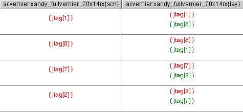
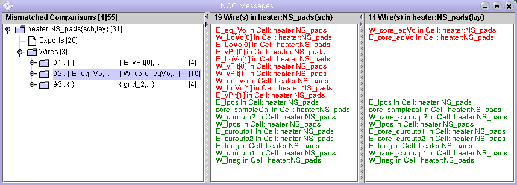
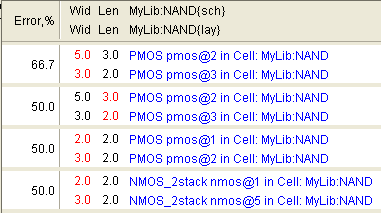
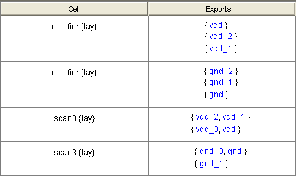
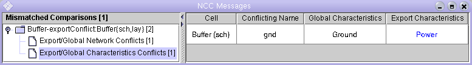

When a designer runs NCC, and NCC finds mismatches, the NCC graphical display window pops up displaying the mismatches. The display varies from platform to platform. Figure 1 shows a typical display with some essential features.
Figure 1: The NCC graphical window
The left side of the window is a tree providing an overview of the kinds of mismatches that NCC found. The right side has information corresponding to the currently selected tree node(s).
Each top-level tree node corresponds to a comparison of two cells. In Figure 1, the label on the top-level node indicates that the comparison that failed was between the Cells
E_pads{sch} and E_pads{lay} in the library heater. If the two Cells have different names or are from different libraries, then their names are shown individually. For example, "libraryA:gateA{sch} & libraryB:gateB{sch}". The number in square brackets at the right end of the Cell names, in our example "[14]", is the number of mismatches.
In general, if you see a tree node with a number in square brackets, then this number is the total number of mismatches grouped under this node.
Selecting a top-level tree node displays the number of Parts, Wires, and Ports in the compared Cells in the right part of the window (Figure 1). For all other nodes, the right side of the window displays a list of component names arranged in different ways, as described in subsequent sections. Some components are highlightable, in which case their names are printed as blue, red, or green hyperlinks.
A top-level node has one or more subnodes. Subnodes can have the following types: Exports, Parts, Wires, Parts (hash code), Wires (hash code), Sizes, Export Assertions, Export/Global Network Conflicts, Export/Global Characteristics Conflicts, and Unrecognized Parts.
The Exports node is always a leaf node with the name "Exports [X]", where X is the number of Export mismatches in this comparison (Figure 1). Selecting an Exports node displays a table on the right side of the NCC graphical window (Figure 2). The table has two columns – one per compared Cell. The header contains Cell names. Each row corresponds to a mismatch. A table cell has zero or more Export lists. An Export list is a list of all the Exports found on a Network and is displayed as a list of Export names surrounded by curly brackets { }. Each Export list is a single hyperlink which highlights all the Exports in the list.
Multiple Export lists in a table cell occur when a single Network in one design (e.g. The schematic) has one or more Exports that match multiple Exports attached to more than one Network in the other design (e.g. the layout). For example, the mismatch on the third row from the top in Figure 2 has layout Exports (the second column) attached to a single Network matching schematic Exports (the first column) attached to two Networks.

Figure 2: The Exports table
An empty table cell means one design has Exports that match no Exports with the same names in the other design. For example, the mismatch in the top row in Figure 2 has the layout Export E_core_sclk matching no Exports in the schematic.
Some Exports are implied. For example, if a schematic Cell uses a global ground, but does not contain an Export for that ground, then NCC will automatically insert an implied Export for ground. This is done because most often the corresponding layout Cell has a ground Export, and we want the schematic and layout Cells to match. Implied Exports are not hyperlinked and have " : implied" added to their names (Figure 3).
When NCC does not find any topological mismatches, it attempts to suggest possible matches for Exports that failed to match by name. Such suggestions are printed in green. The first row of the table in Figure 3 indicates that the outO[1][T] Export in the layout topologically matches the outO[T] Export in the schematic, even though they have different names. The second row indicates that the outE[1][F] Export in the layout topologically matches the net@4[1] Wire in the schematic, even though the net@4[1] Wire has no Exports. Note that a Wire name is not an Export list and is not surrounded by curly brackets.

Figure 3: Implied exports are marked by "implied". Suggestions are printed in green.
Exports that match by name, but are not on equivalent Networks, have red hyperlinks. Such Exports might have suggested matches as well, which are printed in green. In the first row of the table in Figure 4, the jtag[1] Export in the schematic does not topologically match the jtag[1] Export in the layout, but does match the jtag[8] Export in the layout.

Figure 4: Exports that match by name, but are not on equivalent networks have red hyperlinks
NCC finds mismatches by applying two partitioning techniques in sequence. First it uses Local Partitioning [sml2005-0288] and then it uses Hash Code Partitioning. If Local Partitioning finds mismatches, then NCC reports only those. The mismatches in Local Partitioning of parts and wires are grouped under nodes with names "Parts [X]" and "Wires [X]", where X is the number of mismatched Local Partitioning classes (Figure 5). Each class node represents a class of Parts or Wires sharing the same local characteristics.
Parts are partitioned into equivalence classes based upon their type and the number of Wires attached to them. Figure 5 shows a list of two Part classes.

Figure 5: Displaying a Part class
The tree node corresponding to the first class is selected and has the name
"#1 [36]: pads180nm_100um:PAD_dgnd", which has the following meaning:
|
#1 |
The sequence number of this class
|
|
[36] |
The number of mismatched Parts in one of the two cells, whichever is bigger. In our example, the schematic cell has 1 mismatched Part in this class and the layout has 36 mismatched Parts in this class. The maximum of 1 and 36 is 36 and, therefore, the tree node has [36] in its name.
|
|
pads180nm_100um |
Part library
|
|
PAD_dgnd |
Part type |
In the example above, Part types were enough to partition Parts into classes. In many other cases, like the one in Figure 6, types are not enough and the number of different Wires attached to a Part is employed as an additional partitioning criterion.
When a Part class node is selected, the right half of the window displays a two-column table. Each column corresponds to one of the compared Cells and has a list of that Cell's Parts which belong to the selected Part class. Matched Parts are printed in green; the two

Figure 6: The number of attached Wires as a Part class characteristic
Parts on the same line match each other. Mismatched Parts are printed in red in no particular order.
NCC partitions Wires into equivalence classes based upon the number of different Port types attached to them. Examples of Port types include an NMOS gate Port, a PMOS diffusion Port, and a NAND output Port. Port type counts are represented as a list of leaf nodes under the Wire class node. Since zero-value counts at the beginning of the list tend to be numerous and are rarely used by designers, they are further grouped under a "0's" node.
For example, in Figure 7, the second wire class is expanded and we can see its four characteristics, the first three of which are "zero". The first characteristic has a leaf node called "pads180nm_150um:PAD_raw welltapL ports", which means that Wires in this class are not attached to the Port welltapL of the Part PAD_raw from the library pads180nm_150um.
The fourth characteristic is "1 = number of pads180nm_150um:PAD_raw padRaw ports". The name suggests that all Wires in this class are connected to the padRaw Ports of 3 instances of Parts with type PAD_raw from library pads180nm_150um.

Figure 7: Wire class nodes

Figure 8: Displaying a Wire class
When a Wire class node is selected, the right half of the window displays a two-column table (Figure 8). Each column corresponds to one of the compared Cells and has a list of that Cell's Wires which belong to the selected Wire class. Matched Wires are printed in green, the two Wires on the same line match each other. Mismatched Wires are printed in red in no particular order.
The
tree node names contain the first mismatched Wires from both lists.
For example, in Figure 8 the second Wire class has the node name
"#2
: { E_eq_Vo,...}
{ W_core_eqVo,... } [10]",
which has the following meaning:
|
#2 |
The sequence number of this class.
|
|
{ E_eq_Vo,...} |
The first mismatched Wire in the first Cell's list is called E_eq_Vo. The ellipsis after the name suggest that there is more than one Wire in the list.
|
|
{ W_core_eqVo,... } |
The first mismatched Wire in the second Cell's list is called W_core_eqVo.
|
|
[10] |
The number of mismatched Wires in one of the two cells, whichever is bigger. In our example, the schematic Cell has 10 mismatched Wires in this class, and the layout has 2 mismatched Wires in this class. The maximum of 10 and 2 is 10, and therefore, the tree node has [10] in its name.
|
If Local Partitioning fails to find a mismatch, then NCC reports mismatches found by Hash Code Partitioning under the nodes labeled "Parts (hash code)" and "Wires (hash code)". Unlike their local partitioning counterparts, Hash Code Partitioning classes do not have any characteristics.

Figure 9: Up to five equivalence classes can be selected simultaneously
It is possible to select more than one class by holding the Control (Command on Macintosh) or the Shift key during selection. In this case, the right side will have multiple rows, one row per class. Figure 9 shows what is displayed when the three Wire classes in Figure 8 are selected. Up to five classes can be displayed at once. Rows are arranged in the order in which the classes are selected.
Selecting one or more subnodes of a class node is equivalent to selecting the class node itself. This means that no class appears twice in the table on the right. If some node of a type different from Parts, Wires, Parts (hash code), or Wires (hash code) is selected as well, then it has a higher display priority and its contents are displayed instead. For example, if an Exports node was selected with the three Wire class nodes, then the Export table would be displayed on the right.
Both length and width mismatches in transistor and resistor sizes are collected under "Sizes [X]" node, where X is the total number of size mismatches. Resistor size mismatches are reported here, because Polysilicon resistors in both schematics and layout have lengths and widths.

Figure 10: The size mismatches table is sorted in the descending order of the relative error
On the right side of the window, mismatches are arranged into a table sorted in the descending order of the relative error (Figure 10). Each mismatch occupies one row and has four columns. The first column contains the relative error of the mismatch. The second and third columns have widths and lengths of the corresponding parts in two cells. The mismatched value is printed in red. The last column has hyperlinked part names.
If a transistor has both a length and a width mismatch, then these mismatches are displayed in separate rows (e.g. the first and the second rows in Figure 10).
It is very common for a layout Cell, A, to have multiple ground Wires that are connected by A's parent Cell, B. For example, Cell A may have a Wire with the Export gnd and a different Wire with the Export gnd_1. When Cell B instantiates A, Cell B connects A's Exports gnd and gnd_1. However, A's schematic typically has only one combined gnd Wire. When NCC compares A's schematic and layout, it finds that the ground Wires mismatch. As a solution, the designer adds the following NCC annotation into A's layout cell:
exportsConnectedByParent gnd gnd_1
This annotation constitutes a promise that whenever A is instantiated, its Exports gnd and gnd_1 will be connected. Then, when NCC compares A's schematic and layout, it assumes that the promise has been kept and the comparison passes. However, when NCC compares B's schematic and layout, it checks to see if the designer is keeping the promise. If the promise is not kept, and no new promise to connect Exports in the next parent is given, then NCC reports an Export assertion error in the "Export Assertions" leaf node.
When an "Export Assertions" node is selected, it displays a table with two columns and one or more rows (Figure 11). Each row corresponds to a broken promise. The first column has Cell names. The second column lists Exports that the designer promised would be connected, but which remained disconnected. The Exports are organized into two or more Export lists. Each Export list is a comma-separated list of Exports enclosed in curly brackets { }. Exports in the same list are connected. Exports in different lists are disconnected. The designer promised that all Exports in all lists would be connected. All exports are individually highlightable.

Figure 11: The Export Assertions table
In an Export/Global Network conflict, a Cell has both an Export and a global signal with the same name, but their Networks are topologically different (Figure 12). Both the global Network Export and the Cell Export are highlightable.

Figure 12: The Export/Global Network Conflicts table
In an Export/Global Characteristics conflict, one Cell also has both an Export and a global signal with the same name, but their characteristics differ (Figure 13). The Cell Export can be highlighted by clicking on its characteristics.

Figure 13: The Export/Global Characteristics Conflicts table
This node has a list of Parts (transistors and resistors) with unrecognized types (Figure 14). Each Part can be highlighted by clicking on its type.

Figure 14: The Unrecognized Parts table
The total number of mismatched Cell comparisons is displayed in square brackets on the top of the tree. Only comparisons that did not pass NCC tests are counted and displayed. Each failed comparison corresponds to one top-level tree node. By default, NCC halts after the first failed comparison and, therefore, the tree contains just one failed comparison (Figures 1,5-9,12-14). If the user configures her NCC preferences to continue even after finding mismatched Cells, then NCC compares all Cells and displays all that mismatch. When multiple Cells have mismatches, the left pane will display more than one top-level node as in Figure 15.

Figure 15: A tree with multiple comparisons
Right-clicking on a tree node or a table cell pops up a menu with an option to copy the node name or the cell text to the system clipboard (Figure 16).


Figure 16: Right-click menus
References
[sml2005-0288] R. Kao, "Local Partitioning in Java-NCC", 25 May 2005
[sml2005-rk09] R. Kao, "Improvements to Local Partitioning", 16 June 2005